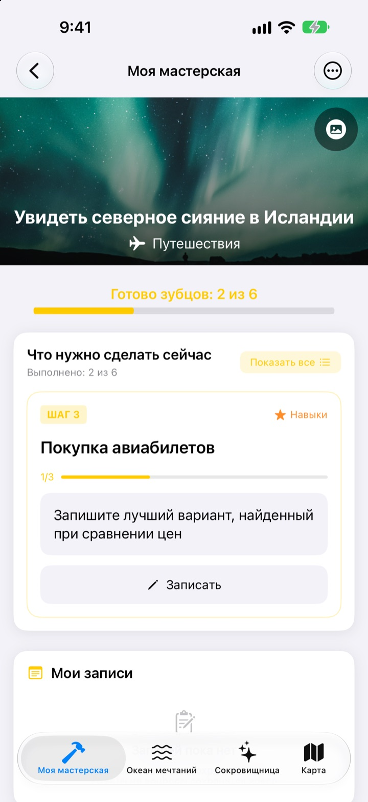
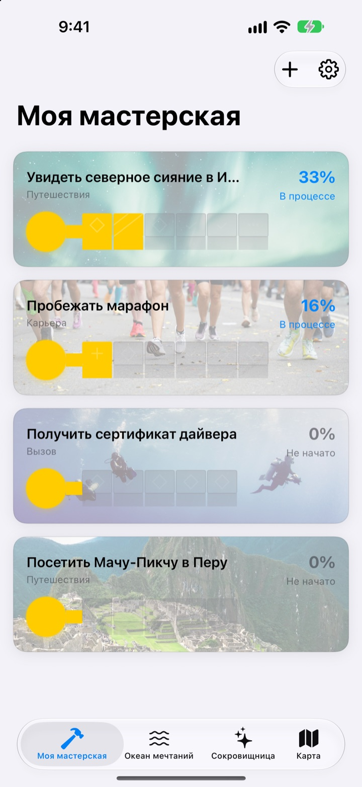
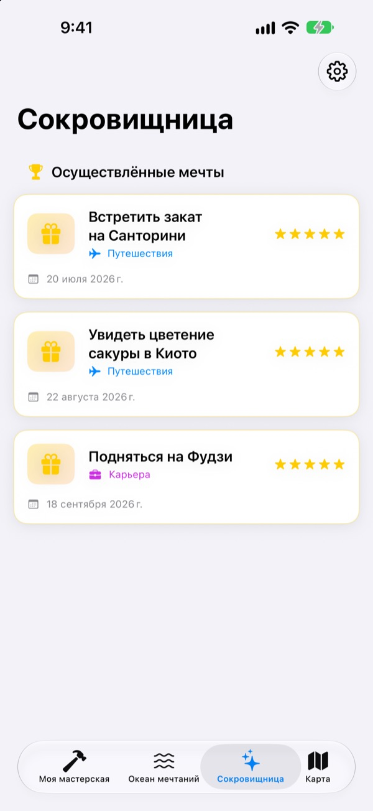

Не просто записывайте
свои мечты
Выберите мечту, и маленькие шаги к ней станут зубцами ключа. Отвечайте на сегодняшний шаг по одному вопросу, и однажды сундук мечты откроется.
Одна покупка, и все функции ваши. Без подписки и рекламы.

Соберите ключ
У мечты увидеть северное сияние в Исландии осталось два шага. Ответьте на каждый вопрос одной строкой (можно оставить пустым) и нажмите «Далее». Каждый готовый шаг заполняет зубец, а полный ключ открывает сундук.
Составляли список мечт и забывали о нём?
«Увидеть северное сияние» звучит так масштабно, что непонятно, с чего начать, и мечта годами висит в списке. Dream Seeker делит её на шаги, которые можно сделать уже сегодня: узнать сезон, накопить бюджет, купить билеты. И показывает только тот шаг, который нужен сейчас.
Больше 590 мечт на выбор
Путешествия, впечатления, достижения, здоровье, учёба и отношения. Мечты из шести областей плывут в сундуках по Океану мечтаний. Возьмите понравившуюся в мастерскую, и шаги к ней уже расписаны.
Нет вашей? Создайте свою: название, область и нужные шаги.

По одному зубцу, ровно столько, сколько на сегодня
В Моей мастерской сразу видно, насколько готов ключ каждой мечты. Текущий шаг наверху, и ответы на его вопросы заполняют зубец.
Ответы и фото копятся в Моих записях, а в хронологии прогресса можно оглянуться на весь пройденный путь.
Сбывшиеся мечты в сокровищнице, места на карте
Заполните все зубцы и откройте сундук. Сбывшиеся мечты собираются в сокровищнице с датами, а мечты на паузе ждут там, пока вы не продолжите.
Мечты, связанные с местом, появляются на карте: все места, куда хочется попасть, видны сразу.

Три шага, чтобы начать
- 1
Выберите мечту
Нажмите на сундук в Океане мечтаний и выберите «Взять в мастерскую».
- 2
Ответьте на шаг дня
Отвечайте на вопросы верхнего шага по одному, чтобы заполнить зубец.
- 3
Откройте сундук
Когда все зубцы заполнены, ключ готов и сундук открывается.
Шесть областей Океана мечтаний
- Путешествия
- Увидеть северное сияние в Исландии · Встретить закат на Санторини
- Впечатления
- Прыгнуть с парашютом · Полетать на параплане
- Достижения
- Пробежать марафон · Дойти до базового лагеря Эвереста
- Здоровье
- Подтянуться 20 раз · Накачать пресс
- Учёба
- Свободно говорить по-английски · Свободно говорить по-французски
- Отношения
- Кругосветное путешествие с родителями · Месяц на острове Чеджу с друзьями
В каждой области почти сотня мечт. Свою мечту можно создать в Моей мастерской через «Добавить новую мечту».
Одна покупка, и всё ваше
Приложение
- Больше 590 мечт с вопросами к каждому шагу
- Свои мечты
- Мои записи с фото и хронология прогресса
- Сокровищница и карта
- Режим «Растим мечту»
- Будущие обновления
Поддержать разработчика (по желанию)
- Если приложение помогает, можно оставить небольшие чаевые в настройках
- Чаевые ничего не открывают. Без них все функции остаются вашими
Разовые чаевые, а не подписка.
Внутри приложения ничего не нужно докупать. Без аккаунта и рекламы.
Частые вопросы
С чего начать?
На вкладке «Океан мечтаний» нажмите на понравившийся сундук и выберите «Взять в мастерскую». В Моей мастерской отвечайте на вопросы текущего шага, и зубцы будут заполняться один за другим. Когда заполнятся все, сундук можно открыть.
Можно добавить свою мечту?
Да. В Моей мастерской нажмите «Добавить новую мечту» и укажите название, область и шаги к ней.
Как поставить мечту на паузу или вернуться к ней?
В меню текущей мечты выберите «Отказаться от мечты», и она переместится в «Мечты на паузе» в сокровищнице. Там нажмите «Начать снова», чтобы вернуть её в мастерскую, или «Удалить насовсем», чтобы стереть.
Что такое режим «Растим мечту»?
Экран, где мечты ведутся как восхождение на гору. Включается и выключается в «Настройки» > «Вид экрана». Можно ставить сроки для каждого шага и учитывать препятствия вроде денег и времени, как в проекте.
Не показываются фото.
Часть фоновых фото мечт загружается из интернета. Проверьте подключение. Без интернета показывается стандартная картинка.
Можно перенести записи на новый iPhone?
Записи хранятся только на этом устройстве, без аккаунта и синхронизации. При восстановлении нового iPhone из резервной копии iCloud или компьютера они перенесутся вместе с данными других приложений.
Есть ли покупки внутри приложения?
Нет. Купив приложение, вы получаете все функции. Чаевые в настройках нужны только тем, кто хочет сказать спасибо.
Мои мечты и записи куда-то отправляются?
Нет. Аккаунта нет, рекламы и аналитики тоже. Ваши мечты, записи и фото остаются на устройстве.
Как с вами связаться?
Сообщения об ошибках, идеи и всё остальное отправляйте через «Отправить отзыв» в настройках приложения или в директ Instagram (@lee25_ios).
Вопросы или проблемы? Пишите на leeo@kakao.com.